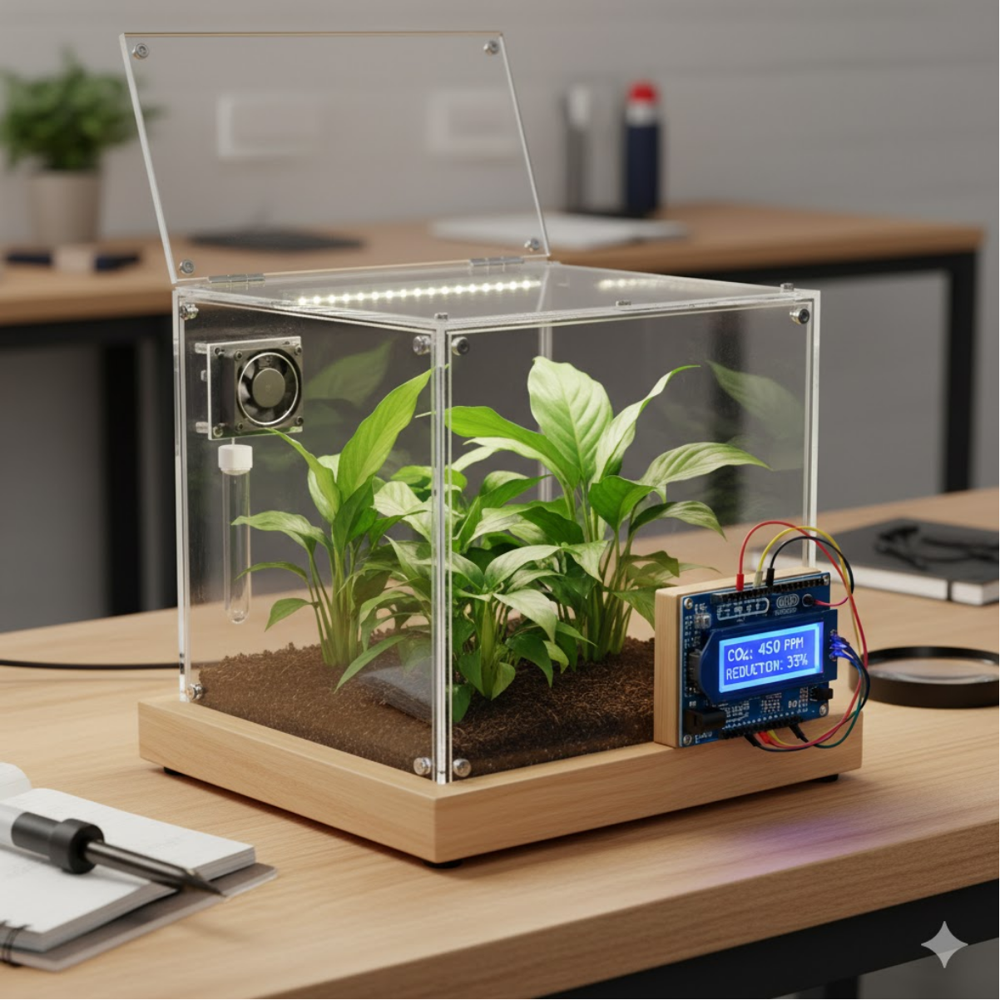

Conecte-se à sinergia entre biologia e tecnologia. Explore como sistemas automatizados e microalgas trabalham juntos para transformar o ar que respiramos em um futuro mais sustentável.
Iniciar navegação

Nas grandes cidades, a pior parte do CO₂ e da poluição está no ar que respiramos todos os dias. A natureza tem soluções mais inteligentes.

O Natural Synergy utiliza o metabolismo e a fotossíntese de microalgas para capturar e transformar o CO₂ em oxigênio e biomassa de forma sustentável.
Natural Synergy é o projeto que soluciona o problema da alta emissão de CO₂. Nós resolvemos esse problema transformando um espaço ambiental em um ativo energético através da captura e conversão do CO₂ em energia e oxigênio. Através de microalgas e sistemas inteligentes, o projeto entrega uma solução eficiente, limpa e escalável.